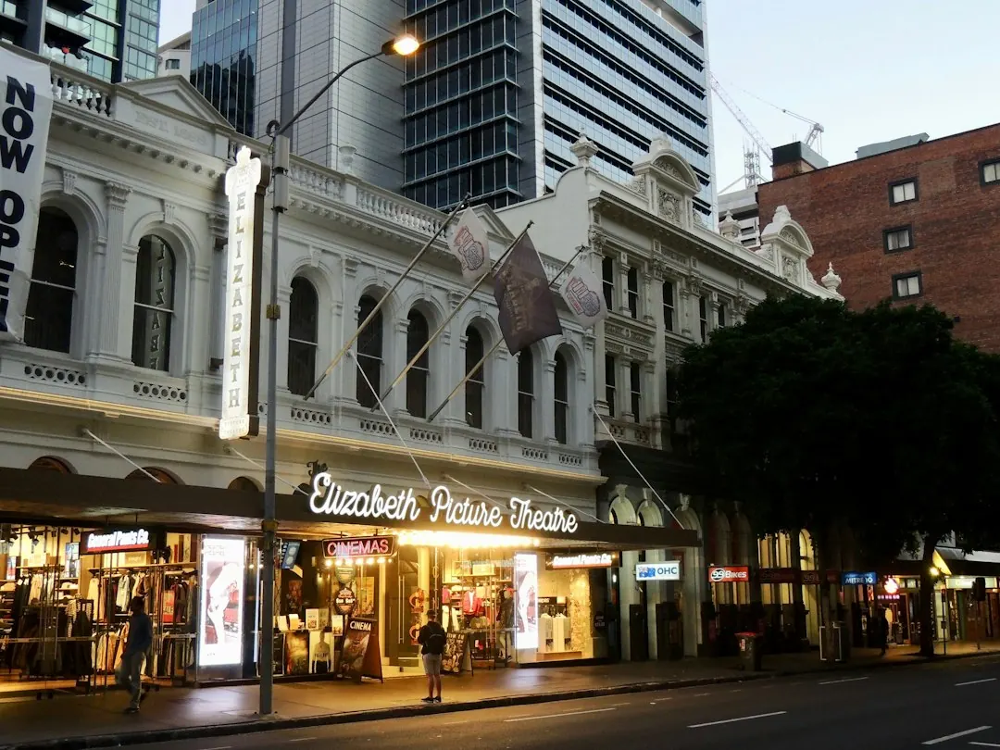

Use the guide to narrow Brisbane dining choices by category, suburb and profile detail before booking. The source page presents 9 provider types: Asian, Casual & Family, Fine Dining, Italian, Modern Australian, Restaurants, Seafood, Steak & Grill, and Vegetarian & Vegan. It also shows 5 featured providers with suburbs, review counts and notes where available, so a sensible shortlist starts with occasion, location and menu confirmation.
For diners comparing a restaurant guide brisbane option, the useful question is whether the listing gives enough detail to choose a venue confidently before making contact.
Restaurant Guide Brisbane Explained
Best Brisbane Restaurants is presented as a Brisbane dining directory with searchable categories, location pages, reviews, photos, service comparisons and contact or quote options. Use a listing to build a shortlist, then confirm live details with the venue before relying on a menu, booking time or dining format.
Start with the parts that change the decision. Category shows broad style, such as Italian, Seafood or Vegetarian & Vegan. Suburb shows whether the venue suits the group. Review count gives context for visible customer feedback. Profile notes may mention breakfast, lunch, dinner, menus, private dining or functions where the source page has that information.
A listing is strongest when it answers both fit and next step. If the profile points readers to current menus, trading details or booking availability, treat that as part of the decision process rather than a formality.
Choosing by Occasion
Occasion is usually the cleanest first filter. A casual family meal, a fine dining booking and a work lunch each need different checks, even when the suburb is the same. The listed categories help diners move from broad intent to a practical venue shortlist.
- Casual meals: compare general Restaurants or Casual & Family listings, then check suburb and menu notes.
- Special occasions: consider Fine Dining, Modern Australian, Italian, Seafood, or Steak & Grill, then confirm booking availability.
- Diet-led choices: use Vegetarian & Vegan or cuisine-led categories, then verify the current menu with the venue.
- Group planning: look for profile notes on lunch, private dining or functions before contacting the venue.
Mixed shortlists often work best. One option can be chosen for convenience, another for cuisine, and another because its profile gives clearer contact or booking prompts.
Location Signals Worth Using
The source page names Brisbane City, South Brisbane, Spring Hill, Sunnybank, Morningside, Teneriffe, Fortitude Valley, Newstead, West End, Woolloongabba and Bulimba in listings or popular location links. Those place names matter when they solve a real dining problem, such as a city lunch, a South Brisbane evening booking, or a group meeting near a chosen suburb.
Location pages are useful when the area is fixed but the food style is open. The page points to combinations such as Italian Restaurants in Brisbane City, Modern Australian in Fortitude Valley and Seafood in Teneriffe, letting diners move from suburb first to category second.
For a broader entry point into the same dining topic, the related restaurants Brisbane guide can help when the first task is simply finding venues, before narrowing by dining style and suburb.
What Featured Profiles Show
The featured profiles show how comparison detail varies. Frescos Restaurant appears in Spring Hill and is described as a verified restaurant venue with information about breakfast and dinner on the venue's own information. Sunnybank Hotel appears in Sunnybank and is described as a verified restaurant with notes for dinner, lunch and menus. Southside Restaurant appears in South Brisbane with notes about menus, private dining or functions and lunch.
Other examples add different cues. Corbett & Claude is listed as an Italian restaurant in Brisbane City. Marlowe Restaurant is listed in South Brisbane with modern Australian cuisine and fine dining. Review counts appear beside featured providers, which helps readers see how much visible feedback sits behind a rating display.
Where a profile has limited text, do not fill the gaps with assumptions. Ask the venue about the current menu, booking process, group suitability and meal period before making plans around that restaurant.
Who This Applies To
This guide suits diners using a directory to make a shortlist, rather than readers looking for a single critic's ranking. It is useful when the decision depends on venue type, suburb, review volume and contact options.
- visitors who know the area but not the restaurant names
- Brisbane locals comparing familiar suburbs with unfamiliar categories
- groups balancing cuisine preference, location and booking practicality
- organisers checking whether a profile mentions functions or private dining
- diners who want to browse by category before checking live venue details
It should not replace direct confirmation. The source page prompts readers to check current menus, trading details and booking availability where relevant, which is the right final step before booking.
- Set the occasion. Decide whether the meal is casual, family focused, fine dining, lunch, dinner or a group function before comparing venues.
- Choose the first filter. Start with category or location, depending on whether food style or travel convenience matters more.
- Read the profile details. Check suburb, category, review count, photos and any notes about menus, meal periods, private dining or functions.
- Confirm live information. Contact the venue to confirm current menus, trading details, booking availability and any group requirements.
| Starting point | Use when | Check before booking |
|---|---|---|
| Category first | You know the cuisine or dining style, such as Italian, Seafood, Fine Dining or Vegetarian & Vegan | Confirm the current menu and meal period |
| Location first | You need a practical suburb such as Brisbane City, South Brisbane, Spring Hill or Sunnybank | Check travel convenience, booking availability and contact details |
| Occasion first | You are planning a family meal, lunch, dinner, private dining or a function | Look for matching profile notes, then confirm with the venue |
Common questions
What categories are listed for Brisbane restaurants? The source page lists Asian, Casual & Family, Fine Dining, Italian, Modern Australian, Restaurants, Seafood, Steak & Grill, and Vegetarian & Vegan.
Can I rely on a listing for current menus? Use the listing to shortlist venues, then confirm current menus, trading details and booking availability with the venue. Several profiles point readers to the venue's own information for live details.
Which suburbs appear in the examples? The page includes examples or popular location links for Brisbane City, South Brisbane, Spring Hill, Sunnybank, Morningside, Teneriffe, Fortitude Valley, Newstead, West End, Woolloongabba and Bulimba.
Does the guide help with private dining or functions? Southside Restaurant is noted with private dining or functions, so group organisers can use that as a prompt to ask the venue about suitability, menu options and availability.
This guide covers how to use Brisbane restaurant categories, suburb signals, profile details and contact prompts to build a practical dining shortlist.